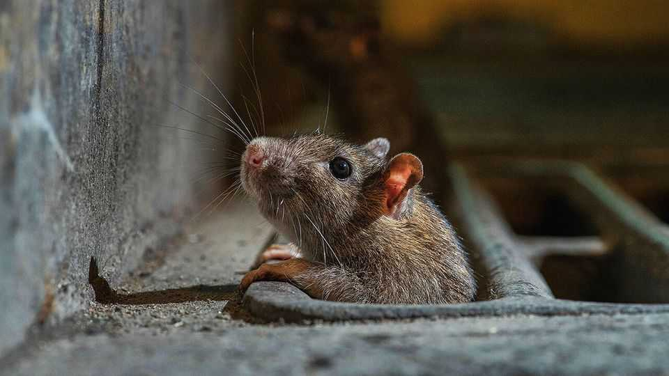

Why it’s a bad time to be a rat-killer
Private equity and artificial intelligence are nibbling at sales

Oct 29th 2026
It is a good time to be a rat. A warmer climate makes breeding easier. Busier cities provide more rubbish to eat. Bed bugs, too, are doing well, thanks to growing pesticide resistance. Then there are the termites, which have been spreading northwards, chewing through ever more of states like New York and Ohio.
Demand for pest-control has been growing for decades. Over the past ten years global spending has nearly doubled, reaching $29bn last year. The industry may be buzzing, but the world’s two biggest pest-control companies—Rollins and Rentokil—are not. Rollins’s share price has fallen by 44% this year. Rentokil is down by 23%.
The modern pest-control industry can trace its origins to these two giants. Orkin, Rollins’s flagship service, was hatched in 1901 when Otto Orkin, a 14-year-old immigrant from Latvia, began selling rat poison door-to-door in Pennsylvania. Rentokil was the name of the fluid that in the 1920s cleared Westminster Hall’s roof of the deathwatch beetles that kept falling on parliamentarians’ heads. Since then the pair have dominated the industry. Today they account for half the revenue of America’s 100 largest pest controllers.
So what has got under investors’ skin? Rentokil is, in part, caught in a trap of its own making. Its takeover of Tennessee-based Terminix four years ago was so badly bungled it prompted investors to sue. The company’s growth has stunk ever since.
But now Rollins, too, is plagued by poor performance. It blamed slow growth early in the year on bad weather, which it said prevented technicians from reaching customers. “They had never used weather as an excuse before,” says Manav Patnaik of Barclays, a bank. The weather improved, then the company missed earnings expectations for its second quarter. And its third.
Two bigger threats are creeping into view. First is private equity. The pest-control industry is attractive to PE in part because it is defensive—people dislike living with bed bugs, and will pay to purge them whatever the state of the economy. Service providers can also keep their claws stuck into customers. In America roughly 80% of pest-control revenue is recurring, as people subscribe to regular pest-proofing in places where infestations are common.
PE-owned businesses have quadrupled their share of the revenue of America’s 100 biggest pest-controllers since 2020, to over 16%, partly by gobbling up smaller providers and merging them. That has made competition fiercer and acquisitions costlier for the incumbents, whose combined market share has slipped from 53% to 51% over the past decade.
The second scourge is AI. According to Bernstein, a broker, customers are increasingly turning to chatbots rather than search engines to find pest-controllers. Because bots scrape sites like Reddit, which attract more—and rosier—reviews for local firms, these get recommended more often. The giants, meanwhile, inspire rage. “I cannot stress this enough to anyone looking for rodent removal…DO NOT HIRE ORKIN!”, writes one Redditor.
That explains why search traffic for Orkin fell by 48%, year on year, between May and July. (Search activity for Terminix has suffered less badly—for now.) Data centres face increasing local opposition. Less appreciated is how the technology they support is helping small businesses compete. In the pest-control industry, AI has brought on a rat race.■